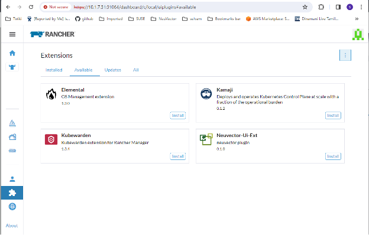
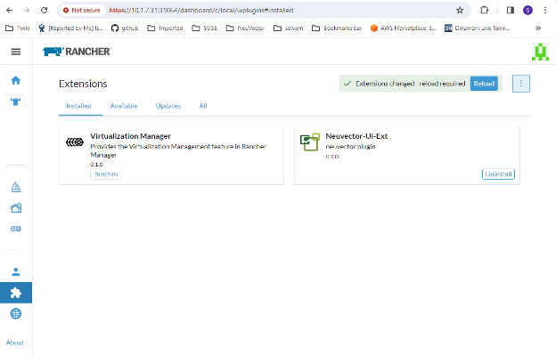
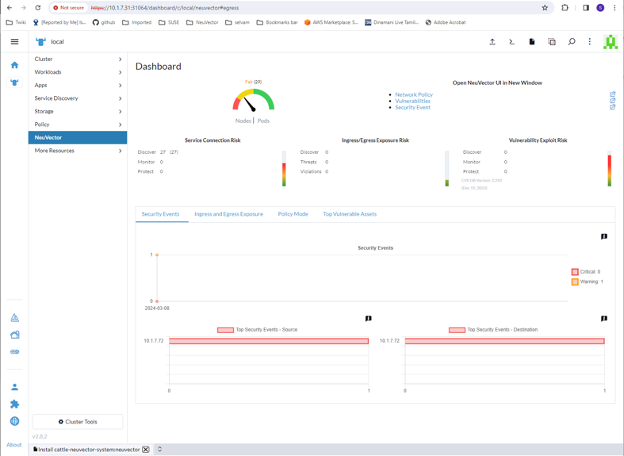

Rancher-Implementierung
Bereitstellen und Verwalten von SUSE® Security über Rancher-Erweiterungen oder App & Marketplace
SUSE® Security kann entweder über Rancher-Erweiterungen für Prime-Kunden oder über Rancher-Apps und Marketplace einfach bereitgestellt werden. Die Standardimplementierung (SUSE® Security basierend auf Helm) wird SUSE® Security Container im Namespace cattle-neuvector-system bereitstellen.
|
Nur SUSE® Security Implementierungen über Rancher-Erweiterungen (SUSE® Security) der Rancher-Version 2.7.0+ oder App & Marketplace der Rancher-Version 2.6.5+ können direkt (Single Sign-On zur SUSE® Security Konsole) über Rancher verwaltet werden. Wenn Cluster zu Rancher mit bereits implementiertem SUSE® Security hinzugefügt werden oder wenn SUSE® Security direkt auf dem Cluster implementiert wurde, werden diese Cluster nicht für die SSO-Integration aktiviert. |
SUSE® Security UI-Erweiterung für Rancher
Rancher Prime-Kunden können SUSE® Security und die SUSE® Security UI-Erweiterung für Rancher einfach bereitstellen. Dies ermöglicht Prime-Nutzern, bestimmte SUSE® Security Funktionen und Ereignisse direkt über die Rancher-UI zu überwachen und zu verwalten. Für Community-Nutzer siehe den Abschnitt Bereitstellen von SUSE® Security weiter unten, um von Rancher-Apps und Marketplace bereitzustellen.
-
Der erste Schritt besteht darin, die Rancher-Erweiterung global zu aktivieren, falls sie noch nicht aktiviert ist.


-
Installieren Sie die SUSE® Security-UI-Erweiterung aus der verfügbaren Liste

-
Laden Sie die Erweiterung neu, sobald die Installation abgeschlossen ist

-
Installieren Sie die SUSE® Security-Anwendung auf Ihrem ausgewählten Cluster über den SUSE® Security Tab, wenn die SUSE® Security App noch nicht installiert ist. Dies sollte Sie zu den Schritten zur App-Installation führen. Für weitere Details zu diesem Installationsprozess siehe den Abschnitt Bereitstellen von SUSE® Security weiter unten.

-
Das SUSE® Security Dashboard sollte jetzt im SUSE® Security Menü für diesen Cluster angezeigt werden. Von diesem Dashboard aus kann eine Zusammenfassung der Sicherheitslage des Clusters überwacht werden. Es gibt interaktive Elemente im Dashboard, wie das Aufrufen eines Assistenten zur Verbesserung Ihres (Sicherheitsrisiko-)Scores, einschließlich der Möglichkeit, automatisches Scannen auf Schwachstellen zu aktivieren, falls dies nicht bereits aktiviert ist.

Darüber hinaus bieten die Links oben rechts im Dashboard praktische Single Sign-On (SSO) Links zur vollständigen SUSE® Security Konsole für eine detailliertere Analyse und Konfiguration.
-
Um die Erweiterung zu deinstallieren, gehen Sie zurück zur Seite Erweiterungen.

Das Deinstallieren der SUSE® Security UI-Erweiterung wird die SUSE® Security App in jedem Cluster NICHT deinstallieren. Das SUSE® Security Menü wird wieder einen SSO-Link zur SUSE® Security Konsole bereitstellen.
Bereitstellen SUSE® Security
Zuerst finden Sie das SUSE® Security Chart in Rancher Charts, wählen Sie es aus und überprüfen Sie die Anweisungen und die verschiedenen Konfigurationswerte. (Optional) Erstellen Sie ein Projekt, in das Sie bereitstellen möchten, z.B. SUSE® Security. Hinweis: Wenn Sie mehr als ein SUSE® Security Chart sehen, wählen Sie nicht das aus, das für das Upgrade von Legacy SUSE® Security 4.x Helm Chart-Bereitstellungen gedacht ist.

Stellen Sie das SUSE® Security Chart bereit, indem Sie zuerst geeignete Werte für eine Rancher-Implementierung konfigurieren, wie z.B.:
-
Container-Laufzeit, z.B. Docker für RKE und containerd für RKE2, oder wählen Sie den K3s-Wert, wenn Sie K3s verwenden.
-
Manager-Diensttyp: Ändern Sie auf LoadBalancer, wenn verfügbar bei Public Cloud-Bereitstellungen. Wenn der Zugriff nur über Rancher gewünscht ist, funktioniert hier jeder erlaubte Wert. Siehe die wichtige Anmerkung unten zum Ändern des Standard-Admin-Passworts in SUSE® Security.
-
Geben Sie an, ob dieser Cluster entweder ein Multi-Cluster-föderierter Primär-Cluster oder ein Remote-Cluster sein wird (oder wählen Sie beide, wenn eine der Optionen gewünscht ist).
-
Persistenter Speicher für Konfigurationssicherungen

Klicken Sie auf 'Installieren', nachdem Sie alle Chart-Werte überprüft und aktualisiert haben.
Nach erfolgreicher SUSE® Security Implementierung sehen Sie eine Zusammenfassung der Implementierungen, Daemon-Sets und Cron-Jobs für SUSE® Security. Sie können auch die im Menü "Service Discovery" auf der linken Seite bereitgestellten Dienste sehen.

Verwalten Sie SUSE® Security
Sie werden jetzt einen Menüpunkt SUSE® Security auf der linken Seite sehen, und die Auswahl davon zeigt eine SUSE® Security Kachel/Schaltfläche, die, wenn sie angeklickt wird, Sie zur SUSE® Security Konsole in einem neuen Tab führt.

Wenn diese Single Sign On (SSO) Zugangsart zum ersten Mal verwendet wird, wird ein entsprechender Benutzer im SUSE® Security Cluster für die Rancher-Benutzerauthentifizierung erstellt. Der gleiche Benutzername des angemeldeten Rancher-Benutzers wird in SUSE® Security erstellt, mit einer Rolle von entweder admin oder fedAdmin und dem Identitätsanbieter als Rancher.

Beachten Sie im obigen Screenshot, dass zwei Rancher-Benutzer, admin und gkosaka, automatisch für SSO erstellt wurden. Wenn ein anderer Benutzer manuell in SUSE® Security erstellt wird, wird der Identitätsanbieter als SUSE® Security aufgeführt, wie unten gezeigt. Dieser lokale Benutzer kann sich direkt bei der SUSE® Security Konsole anmelden, ohne über Rancher zu gehen.

|
Es wird empfohlen, sich direkt bei der SUSE® Security Konsole als admin/admin anzumelden, um das Admin-Passwort manuell in ein starkes Passwort zu ändern. Dies ändert nur das Passwort des SUSE® Security Identitätsanbieter-Adminbenutzers (Sie sehen möglicherweise einen anderen Adminbenutzer, dessen Identitätsanbieter Rancher ist). Alternativ können Sie eine ConfigMap als Secret in der ursprünglichen Implementierung von Rancher einfügen (siehe Chart-Werte für ConfigMap-Einstellungen), um das Standard-Admin-Passwort auf ein starkes Passwort zu setzen. |
NeuVector/Rancher SSO Berechtigungsressourcen
Die Rancher v2.9.2 UI ermöglicht die Auswahl von NeuVector-Berechtigungsressourcen beim Erstellen von Global/Cluster/Project/Namespaces Rollen. Wenn einem Rancher-Benutzer eine Rolle mit einer NeuVector-Berechtigungsressource zugewiesen wird, wird die NeuVector-SSO-Sitzung des Benutzers entsprechend der jeweiligen NeuVector-Berechtigung zugewiesen. Dies dient dazu, SSO-Benutzern benutzerdefinierte Rollen zuzuweisen, die von den reservierten admin/reader/fedAdmin/fedReader Rollen abweichen.
Nachfolgend sind die zugeordneten Berechtigungsressourcen aufgeführt, die mit den anwendbaren Global/Cluster/Project/Namespaces Rollen verwendet werden.
Zugeordnete Berechtigungsressourcen für die Global/Cluster Rolle
|
Benutzer müssen manuell * (Verben) / services/proxy (Ressource) zu den NeuVector-bezogenen |
API-Gruppen:
permission.neuvector.com
Verben:
get // for read-only(i.e. view)
* // for read/write(i.e. modify)Ressourcen:
NeuVector, Cluster-Scoped
AdmissionControl
Authentication
CI Scan
Cluster
Federation
VulnerabilityNeuVector, Namespaced
AuditEvents
Authorization
Compliance
Events
Namespace
RegistryScan
RuntimePolicy
RuntimeScan
SecurityEvents
SystemConfigZugeordnete Berechtigungsressourcen für die Project/Namespace Rolle
|
Benutzer müssen manuell * (Verben) / services/proxy (Ressource) zu den NeuVector-bezogenen |
API-Gruppen:
permission.neuvector.com
Verben:
get // for read-only(i.e. view)
* // for read/write(i.e. modify)Ressourcen:
NeuVector, Namespaced
AuditEvents
Authorization
Compliance
Events
Namespace
RegistryScan
RuntimePolicy
RuntimeScan
SecurityEvents
SystemConfigDeaktivierung von SUSE® Security/Rancher SSO
Um die Möglichkeit zu deaktivieren, sich von Rancher Manager aus bei SUSE® Security anzumelden, gehen Sie zu Einstellungen → Konfiguration.

Rancher Legacy-Implementierungen
Die Beispieldatei wird einen Manager und 3 Controller bereitstellen. Es wird ein Durchsetzer auf jedem Knoten bereitgestellt. Siehe den unteren Abschnitt, um dedizierte Manager- oder Controller-Knoten mithilfe von Knotenlabels anzugeben. Hinweis: Es wird nicht empfohlen, mehr als einen Manager hinter einem Lastenausgleich bereitzustellen (skalieren), da dies zu potenziellen Problemen mit dem Sitzungsstatus führen kann.
|
Die Implementierung auf Rancher 2.x/Kubernetes sollte dem Kubernetes-Referenzabschnitt und/oder der Helm-basierten Implementierung folgen. |
-
Stellen Sie die Katalogdatei docker-compose-dist.yml bereit, Controller werden auf den gekennzeichneten Knoten bereitgestellt, Durchsetzer werden auf den restlichen Knoten bereitgestellt. (Die Beispieldatei kann so modifiziert werden, dass Durchsetzer nur auf den angegebenen Knoten bereitgestellt werden.)
-
Wählen Sie einen der Controller aus, mit dem sich der Manager verbinden soll. Ändern Sie die Katalogdatei des Managers docker-compose-manager.yml, setzen Sie CTRL_SERVER_IP auf die IP des Controllers und stellen Sie dann den Manager-Katalog bereit.
Hier sind die Beispiel-Compose-Dateien. Wenn Sie nur eine oder zwei der Komponenten bereitstellen möchten, verwenden Sie einfach diesen Abschnitt der Datei.
Beispiel-Compose-Datei für Rancher Manager/Controller/Enforcer:
manager:
scale: 1
image: neuvector/manager
restart: always
environment:
- CTRL_SERVER_IP=controller
ports:
- 8443:8443
controller:
scale: 3
image: neuvector/controller
restart: always
privileged: true
environment:
- CLUSTER_JOIN_ADDR=controller
volumes:
- /var/run/docker.sock:/var/run/docker.sock
- /proc:/host/proc:ro
- /sys/fs/cgroup:/host/cgroup:ro
- /var/neuvector:/var/neuvector
enforcer:
image: neuvector/enforcer
pid: host
restart: always
privileged: true
environment:
- CLUSTER_JOIN_ADDR=controller
volumes:
- /lib/modules:/lib/modules
- /var/run/docker.sock:/var/run/docker.sock
- /proc:/host/proc:ro
- /sys/fs/cgroup/:/host/cgroup/:ro
labels:
io.rancher.scheduler.global: trueBereitstellung ohne privilegierten Modus
Auf einigen Systemen wird die Implementierung ohne Verwendung des privilegierten Modus unterstützt. Diese Systeme müssen die Möglichkeit unterstützen, Berechtigungen mit der Einstellung cap_add hinzuzufügen und das AppArmor-Profil festzulegen.
Siehe die Abschnitte zur Implementierung mit Docker-Compose, Docker UCP/Datacenter für Beispiel-Compose-Dateien.
Hier ist eine Beispiel-Rancher-Compose-Datei für die Implementierung ohne privilegierten Modus:
manager:
scale: 1
image: neuvector/manager
restart: always
environment:
- CTRL_SERVER_IP=controller
ports:
- 8443:8443
controller:
scale: 3
image: neuvector/controller
pid: host
restart: always
cap_add:
- SYS_ADMIN
- NET_ADMIN
- SYS_PTRACE
security_opt:
- apparmor=unconfined
- seccomp=unconfined
- label=disable
environment:
- CLUSTER_JOIN_ADDR=controller
volumes:
- /var/run/docker.sock:/var/run/docker.sock
- /proc:/host/proc:ro
- /sys/fs/cgroup:/host/cgroup:ro
- /var/neuvector:/var/neuvector
enforcer:
image: neuvector/enforcer
pid: host
restart: always
cap_add:
- SYS_ADMIN
- NET_ADMIN
- SYS_PTRACE
- IPC_LOCK
security_opt:
- apparmor=unconfined
- seccomp=unconfined
- label=disable
environment:
- CLUSTER_JOIN_ADDR=controller
volumes:
- /lib/modules:/lib/modules
- /var/run/docker.sock:/var/run/docker.sock
- /proc:/host/proc:ro
- /sys/fs/cgroup/:/host/cgroup/:ro
labels:
io.rancher.scheduler.global: trueVerwendung von Knoten-Labels für Manager- und Controller-Knoten
Um zu steuern, auf welchen Knoten der Manager und der Controller bereitgestellt werden, kennzeichnen Sie jeden Knoten. Wählen Sie die Knoten aus, auf denen die Controller bereitgestellt werden sollen. Kennzeichnen Sie sie mit "nvcontroller=true". (Mit der aktuellen Beispieldatei kann nicht mehr als ein Controller auf demselben Knoten ausgeführt werden.).
Für den Manager-Knoten kennzeichnen Sie ihn “nvmanager=true”.
Fügen Sie Labels in der YAML-Datei hinzu. Beispielsweise für den Manager:
labels:
io.rancher.scheduler.global: true
io.rancher.scheduler.affinity:host_label: "nvmanager=true"Für den Controller:
labels:
io.rancher.scheduler.global: true
io.rancher.scheduler.affinity:host_label: "nvcontroller=true"Für den Enforcer, um zu verhindern, dass er auf einem Controller-Knoten ausgeführt wird (falls gewünscht):
labels:
io.rancher.scheduler.global: true
io.rancher.scheduler.affinity:host_label_ne: "nvcontroller=true"